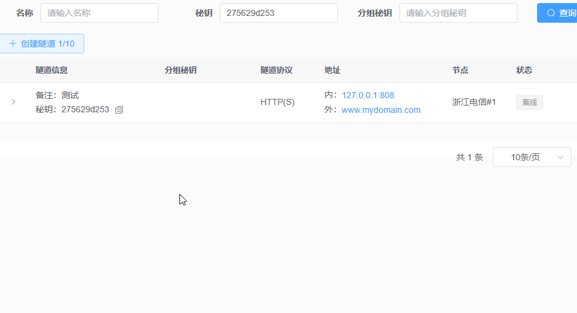
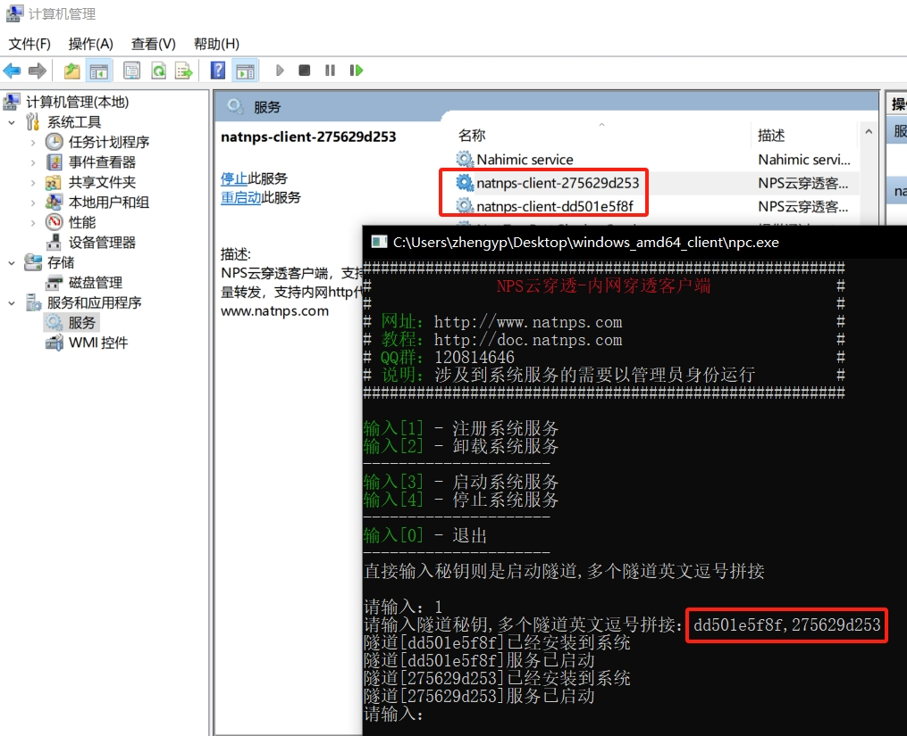

# Window 客户端使用指南
提示
Windows 客户端仅3.5MB，且无需安装，解压即用，傻瓜式一键启动隧道，支持注册系统服务，后台运行，开机启动。这是一个开源的软件，如果您的客户端文件被杀毒软件或者防火墙误杀，无需担心，请添加白名单放心使用。
# 使用示例

# 启动指南
1.下载相关版本的windows客户端，通常是 windows_amd64_client
2.解压这个文件
3.双击运行npc.exe执行文件
4.输入您的隧道ID，然后按下回车
5.看到您已成功连接到服务器则代表启动成功
# 后台服务运行
1.右键npc.exe文件，以管理员身份运行
2.输入1后，然后输入您的隧道ID，以安装到系统服务。（如果需要卸载系统服务，输入2即可）
3.再输入隧道秘钥，支持拼接秘钥，和隧道分组秘钥
3.打开计算机管理 -> 服务，查看natnps-client-xxxx 是否成功被注册。

注意
安装到系统服务，日志文件在当前npc.exe 同级目录下，如果安装多个隧道服务，将共用一个npc.log日志文件，可以创建多个目录实现日志分离